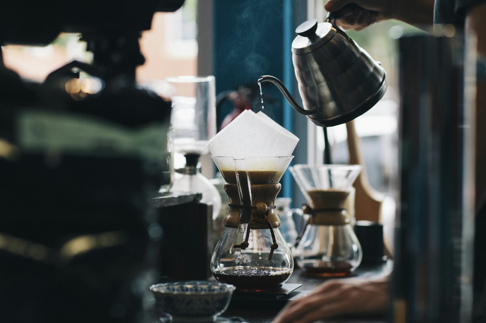
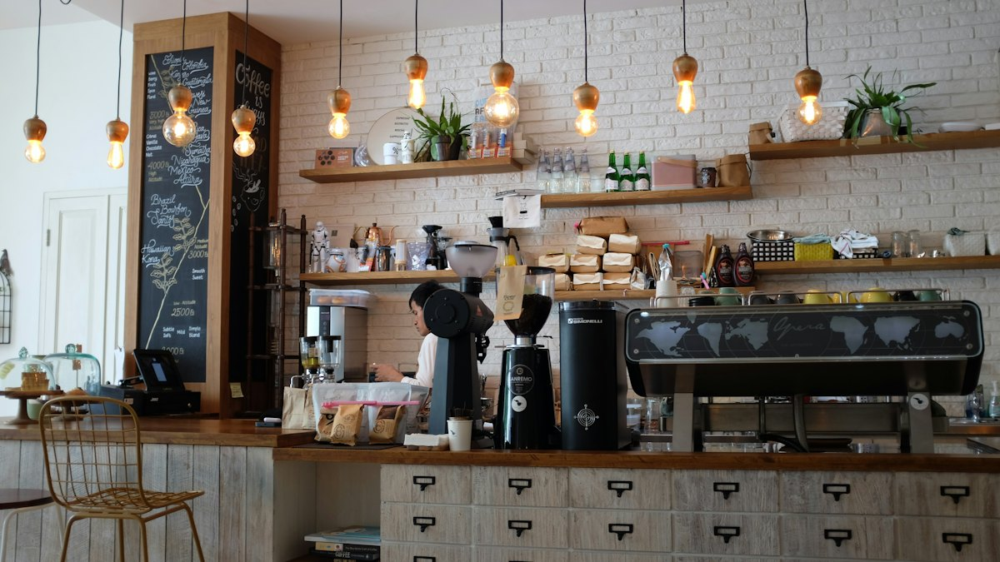
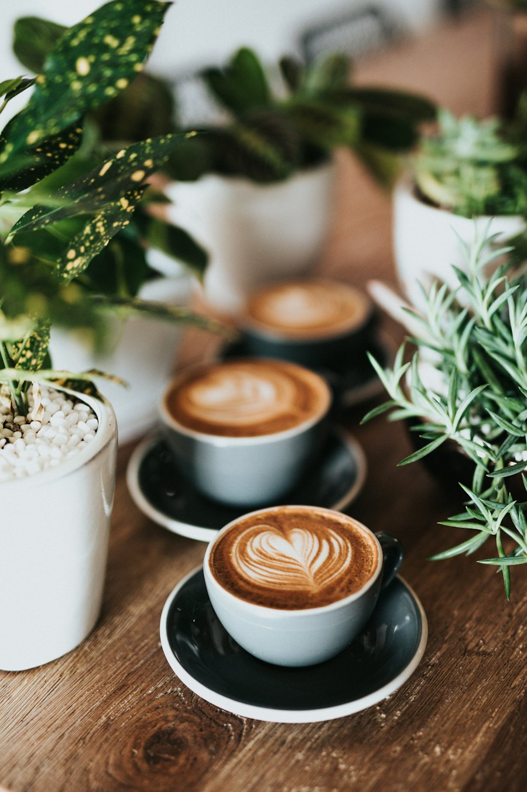
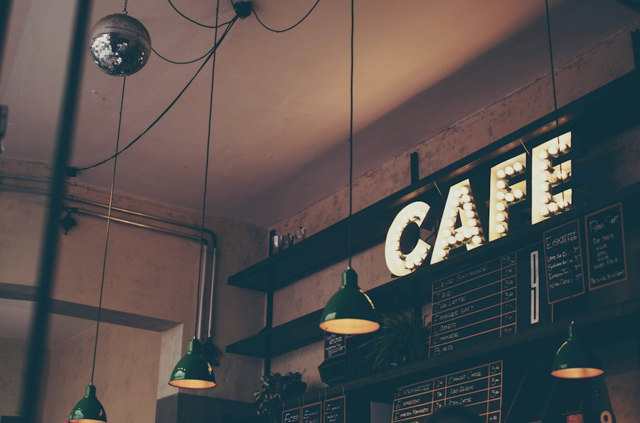

Двадцать мест, большие окна и своя обжарка по вторникам. Заходите за капучино по дороге или оставайтесь с ноутбуком до вечера.




Открылись в 2021-м вдвоём, сейчас нас шестеро. Зерно покупаем у фермеров напрямую через импортёра и жарим сами на маленьком ростере прямо в зале — по вторникам пахнет на весь квартал.
Розетки у каждого стола, Wi-Fi без пароля, собакам можно.
ул. Парковая, 5
напротив главного входа в парк
Пн–Пт 8:00–21:00
Сб–Вс 9:00–22:00